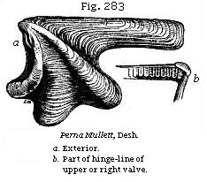
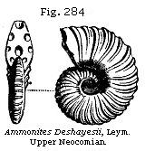
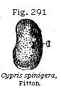

The Student’s Elements of Geology
Classification of marine and fresh-water Strata. — Upper Neocomian. — Folkestone and Hythe Beds. — Atherfield Clay. — Similarity of Conditions causing Reappearance of Species after short Intervals. — Upper Speeton Clay. — Middle Neocomian. — Tealby Series. — Middle Speeton Clay. — Lower Neocomian. — Lower Speeton Clay. — Wealden Formation. — Fresh-water Character of the Wealden. — Weald Clay. — Hastings Sands. — Punfield Beds of Purbeck, Dorsetshire. — Fossil Shells and Fish of the Wealden. — Area of the Wealden. — Flora of the Wealden.
We now come to the Lower Cretaceous Formation which was formerly called Lower Greensand, and for which it will be useful for reasons before explained (p. 282) to use the term “Neocomian."
| Marine | Fresh-water |
|
Part of Wealden beds of Kent, Surrey, Sussex, Hants, and Dorset. |
In Western France, the Alps, the Carpathians, Northern Italy, and the Apennines, an extensive series of rocks has been described by Continental geologists under the name of Tithonian. These beds, which are without any marine equivalent in this country, appear completely to bridge over the interval between the Neocomian and the Oolites. They may, perhaps, as suggested by Mr. Judd, be of the same age as part of the Wealden series.
Folkstone and Hythe Beds.—The sands which crop out beneath the Gault in Wiltshire, Surrey, and Sussex are sometimes in the uppermost part pure white, at others of a yellow and ferruginous colour, and some of the beds contain much green matter. At Folkestone they contain layers of calcareous matter and chert, and at Hythe, in the neighbourhood, as also at Maidstone and other parts of Kent, the limestone called Kentish Rag is intercalated. This somewhat clayey
and calcareous stone forms strata two feet thick, alternating with quartzose sand. The total thickness of these Folkestone and Hythe beds is less than 300 feet, and they are seen to rest immediately on a grey clay, to which we shall presently allude as the Atherfield clay. Among the fossils of the Folkestone and Hythe beds we may mention Nautilus plicatus (Fig. 277), Ancyloceras (Scaphites) gigas (Fig. 278), which has been aptly described as an Ammonite more or less uncoiled; Trigonia caudata (Fig. 280), Gervillia anceps (Fig. 279), a bivalve genus allied to Avicula, and Terebratula sella (Fig. 281). In ferruginous beds of the same age in Wiltshire is found a remarkable shell called Diceras Lonsdalii (Fig. 282), which abounds in the Upper and Middle Neocomian of Southern Europe. This genus is closely allied to Chama, and the cast of the interior has been compared to the horns of a goat.
Atherfield Clay.—We mentioned before that the Folkstone and Hythe series rest on a grey clay. This clay is only of slight thickness in Kent and Surrey, but acquires great dimensions at Atherfield, in the Isle of Wight. The difference, indeed, in mineral character and thickness of the Upper Neocomian formation near Folkestone, and the corresponding beds in the south of the Isle of Wight, about
100 miles distant, is truly remarkable. In the latter place we find no limestone answering to the Kentish Rag, and the entire thickness from the bottom of the Atherfield clay to the top of the Neocomian, instead of being less than 300 feet as in Kent, is given by the late Professor E. Forbes as 843 feet, which he divides into sixty-three strata, forming three groups. The uppermost of these consists of ferruginous sands, the second of sands and clay, and the third or lowest of a brown clay, abounding in fossils.
Pebbles of quartzose sandstone, jasper, and flinty slate, together with grains of chlorite and mica, and, as Mr. Godwin-Austen has shown, fragments and water-worn fossils of the oolitic rocks, speak plainly of the nature of the pre-existing formations, by the wearing down of which the Neocomian beds were formed. The land, consisting of such rocks, was doubtless submerged before the origin of the white chalk, a deposit which was formed in a more open sea, and in clearer waters.
Among the shells of the Atherfield clay the biggest and most abundant shell is the large Perna Mulleti, of which a reduced figure is given in Fig. 283.
Similarity of Conditions causing Reappearance of Species.—Some species of mollusca and other fossils range through the whole series, while others are confined to particular subdivisions, and Forbes laid down a law which has since been found of very general application in regard to estimating the chronological relations of consecutive
strata. Whenever similar conditions, he says, are repeated, the same species reappear, provided too great a lapse of time has not intervened; whereas if the length of the interval has been geologically great, the same genera will reappear represented by distinct species. Changes of depth, or of the mineral nature of the sea-bottom, the presence or absence of lime or of peroxide of iron, the occurrence of a muddy, or a sandy, or a gravelly bottom, are marked by the banishment of certain species and the predominance of others. But these differences of conditions being mineral, chemical, and local in their nature, have no necessary connection with the extinction, throughout a large area, of certain animals or plants. When the forms proper to loose sand or soft clay, or to perfectly clear water, or to a sea of moderate or great depth, recur with all the same species, we may infer that the interval of time has been, geologically speaking, small, however dense the mass of matter accumulated. But if, the genera remaining the same, the species are changed, we have entered upon a new period; and no similarity of climate, or of geographical and local conditions, can then recall the old species which a long series of destructive causes in the animate and inanimate world has gradually annihilated.
Speeton Clay, Upper Division.—On the coast, beneath the white chalk of Flamborough Head, in Yorkshire, an argillaceous formation crops out, called the Speeton clay, several hundred feet in thickness, the palæontological relations of which have been ably worked out by Mr. John W. Judd,* and he has shown that it is separable into three divisions, the uppermost of which, 150 feet thick, and containing 87 species of mollusca, decidedly belongs to the Atherfield clay and associated strata of Hythe and Folkestone, already described. It is characterised by the Perna Mulleti (Fig. 283) and Terebratula sella (Fig. 281), and by Ammonites Deshayesii (Fig. 284), a well-known Hythe fossil. Fine skeletons of reptiles of the genera Pliosaurus and Teleosaurus have been obtained from this clay. At the base of this upper division of the Speeton clay there occurs a layer of large Septaria, formerly worked for the manufacture of cement. This bed is crowded with fossils, especially Ammonites, one species of which, three feet in diameter, was observed by Mr. Judd.
* Judd, Speeton clay, Quart. Geol. Journ., vol. xxiv, 1868, p. 218.
Tealby Series.—At Tealby, a village in the Lincolnshire Wolds, there crop out beneath the white chalk some non-fossiliferous ferruginous sands about twenty-feet thick, beneath which are beds of clay and limestone, about fifty feet thick, with an interesting suite of fossils, among which are Pecten cinctus (Fig. 285), from 9 to 12 inches in diameter, Ancyloceras Duvallei (Fig. 286), and some forty other shells, many of them common to the Middle Speeton clay, about to be mentioned. Mr. Judd remarks that as Ammonites clypeiformis and Terebratula hippopus characterise the Middle Neocomian of the Continent, it is to this stage that the Tealby series containing the same fossils may be assigned.*
The middle division of the Speeton clay, occurring at Speeton below the cement-bed, before alluded to, is 150 feet thick, and contains about 39 species of mollusca, half of which are common to the overlying clay. Among the peculiar shells, Pecten cinctus (Fig. 285) and Ancyloceras (Crioceras) Duvallei (Fig. 286) occur.
In the lower division of the Speeton clay, 200 feet thick, 46 species of mollusca have been found, and three divisions, each characterised by its peculiar ammonite, have been noticed by Mr. Judd. The central zone is marked by Ammonites Noricus (see Fig. 287). On the Continent these beds are well-known by their corresponding fossils, the Hils clay and conglomerate of the north of Germany agreeing with
* Judd, Quart. Geol. Journ., 1867, vol. xxiii, p. 249.
the Middle and Lower Speeton, the latter of which, with the same mineral characters and fossils as in Yorkshire, is also found in the little island of Heligoland. Yellow limestone, which I have myself seen near Neuchatel, in Switzerland, represents the Lower Neocomian at Speeton.
Beneath the Atherfield clay or Upper Neocomian of the S.E. of England, a fresh-water formation is found, called the Wealden, which, although it occupies a small horizontal area in Europe, as compared to the White Chalk and the marine Neocomian beds, is nevertheless of great geological interest, since the imbedded remains give us some insight into the nature of the terrestrial fauna and flora of the Lower Cretaceous epoch. The name of Wealden was given to this group because it was first studied in parts of Kent, Surrey, and Sussex, called the Weald; and we are indebted to Dr. Mantell for having shown, in 1822, in his “Geology of Sussex,” that the whole group was of fluviatile origin. In proof of this he called attention to the entire absence of Ammonites, Belemnites, Brachiopoda, Echinodermata, Corals, and other marine fossils, so characteristic of the Cretaceous rocks above, and of the Oolitic strata below, and to the presence in the Weald of Paludinæ, Melaniæ, Cyrenæ, and various fluviatile shells, as well as the bones of terrestrial reptiles and the trunks and leaves of land-plants.
The evidence of so unexpected a fact as that of a dense mass of purely fresh-water origin underlying a deep-sea deposit (a phenomenon with which we have since become familiar) was received, at first, with no small doubt and incredulity. But the relative position of the beds is unequivocal; the Weald Clay being distinctly seen to pass beneath the Atherfield Clay in various parts of Surrey, Kent, and Sussex, and to reappear in the Isle of Wight at the base of the Cretaceous series, being, no doubt, continuous far beneath the surface, as indicated by the dotted lines in Fig. 288. They are also found occupying the same relative position below the chalk in the peninsula of Purbeck, Dorsetshire, where, as we shall see in the sequel, they repose on strata referable to the Upper Oolite.
Weald Clay.—The Upper division, or Weald Clay, is, in great part, of fresh-water origin, but in its highest portion
contains beds of oysters and other marine shells which indicate fluvio-marine conditions. The uppermost beds are not only conformable, as Dr. Fitton observes, to the inferior strata of the overlying Neocomian, but of similar mineral composition. To explain this, we may suppose that, as the delta of a great river was tranquilly subsiding, so as to allow the sea to encroach upon the space previously occupied by fresh-water, the river still continued to carry down the same sediment into the sea. In confirmation of this view it may be stated that the remains of the Iguanodon Mantelli, a gigantic terrestrial reptile, very characteristic of the Wealden, has been discovered near Maidstone, in the overlying Kentish Rag, or marine limestone of the Upper Neocomian. Hence we may infer that some of the saurians which inhabited the country of the great river continued to live when part of the district had become submerged beneath the sea. Thus, in our own times, we may suppose the bones of large alligators to be frequently entombed in recent fresh-water strata in the delta of the Ganges. But if part of that delta should sink down so as to be covered by the sea, marine formations might begin to accumulate in the same space where fresh-water beds had previously been formed; and yet the Ganges might still pour down its turbid waters in the same direction, and carry seaward the carcasses of the same species of alligator, in which case their bones might be included in marine as well as in subjacent fresh-water strata.
The Iguanodon, first discovered by Dr. Mantell, was an herbivorous reptile, of which the teeth, though bearing a great analogy, in their general form and crenated edges (see Figs. 289 a and b), to the modern Iguanas which now frequent the tropical woods of America and the West Indies, exhibit many important differences. It appears that they have often been worn by the process of mastication; whereas the existing herbivorous reptiles clip and gnaw off the vegetable productions on which they feed, but do not chew them. Their teeth frequently present an appearance
of having been chipped off, but never, like the fossil teeth of the Iguanodon, have a flat ground surface (see Fig. 290, b) resembling the grinders of herbivorous mammalia. Dr. Mantell computes that the teeth and bones of this species which passed under his examination during twenty years must have belonged to no less than seventy-one distinct individuals, varying in age and magnitude from the reptile just burst from the egg, to one of which the femur measured twenty-four inches in circumference. Yet, notwithstanding that the teeth were more numerous than any other bones, it is remarkable that it was not until the relics of all these individuals had been found, that a solitary example of part of a jaw-bone was obtained. Soon afterwards remains both of the upper and lower jaw were met with in the Hastings beds in Tilgate Forest, near Cuckfield. In the same sands at Hastings, Mr. Beckles found large tridactyle impressions which it is conjectured were made by the hind feet of this animal, on which it is ascertained that there were only three well-developed toes.
Occasionally bands of limestone, called Sussex Marble, occur in the Weald Clay, almost entirely composed of a species of Paludina, closely resembling the common P. vivipara of English rivers. Shells of the Cypris, a genus of Crustaceans mentioned (p. 57) as abounding in lakes and ponds, are also plentifully scattered through the clays of the Wealden,
sometimes producing, like plates of mica, a thin lamination (see Fig. 292).
Hastings Sands.—This lower division of the Wealden consists of sand, sandstone, calciferous grit, clay, and shale; the argillaceous strata, notwithstanding the name, predominating somewhat over the arenaceous, as will be seen by reference to the following table, drawn up by Messrs. Drew and Foster, of the Geological Survey of Great Britain:
| Names of Subordinate Formations. |
Mineral Composition of the Strata. |
Thickness in feet. |
|
| Hastings Sand | Tunbridge Wells Sand | Sandstone and loam | 150 |
| Wadhurst Clay | Blue and brown shale and clay,
with a little calc-grit |
100 | |
| Ashdown Sand | Hard sand, with some beds of calc-grit | 160 | |
| Ashburnham Beds | Mottled white and red clay, with some sandstone |
330 |
The picturesque scenery of the “High Rocks” and other places in the neighbourhood of Tunbridge Wells is caused by the steep natural cliffs, to which a hard bed of white sand, occurring in the upper part of the Tunbridge Wells Sand, mentioned in the above table, gives rise. This bed of “rock-sand” varies in thickness from 25 to 48 feet. Large masses of it, which were by no means hard or capable of making a good building-stone, form, nevertheless, projecting rocks with perpendicular faces, and resist the degrading action of the river because, says Mr. Drew, they present a solid mass without planes of division. The calcareous sandstone and grit of Tilgate Forest, near Cuckfield, in which the remains of the Iguanodon and Hylæosaurus were first found by Dr. Mantell, constitute an upper member of the Tunbridge Wells Sand, while the “sand-rock” of the Hastings cliffs, about 100 feet thick, is one of the lower members of the same. The reptiles, which are very abundant in this division, consist partly of saurians, referred by Owen and Mantell to eight genera, among which, besides those already enumerated, we find the Megalosaurus and Plesiosaurus. The Pterodactyl also, a flying reptile, is met with in the same strata, and many remains of Chelonians of the genera Trionyx and Emys, now confined to tropical regions.
The fishes of the Wealden are chiefly referable to the Ganoid and Placoid orders. Among them the teeth and scales of Lepidotus are most widely diffused (see Fig. 293, next page). These
ganoids were allied to the Lepidosteus, or Gar-pike, of the American rivers. The whole body was covered with large rhomboidal scales, very thick, and having the exposed part coated with enamel. Most of the species of this genus are supposed to have been either river-fish, or inhabitants of the sea at the mouth of estuaries.
At different heights in the Hastings Sands, we find again and again slabs of sandstone with a strong ripple-mark, and between these slabs beds of clay many yards thick. In some places, as at Stammerham, Horsham, near there, are indications of this clay having been exposed so as to dry and crack before the next layer was thrown down upon it. The open cracks in the clay have served as moulds, of which casts have been taken in relief, and which are, therefore, seen on the lower surface of the sandstone (see Fig. 295).
Near the same place a reddish sandstone occurs in which
are innumerable traces of a fossil vegetable, apparently Sphenopteris, the stems and branches of which are disposed as if the plants were standing erect on the spot where they originally grew, the sand having been gently deposited upon and around them; and similar appearances have been remarked in other places in this formation.* In the same division also of the Wealden, at Cuckfield, is a bed of gravel or conglomerate, consisting of water-worn pebbles of quartz and jasper, with rolled bones of reptiles. These must have been drifted by a current, probably in water of no great depth.
From such facts we may infer that, notwithstanding the great thickness of this division of the Wealden, the whole of it was a deposit in water of a moderate depth, and often extremely shallow. This idea may seem startling at first, yet such would be the natural consequence of a gradual and continuous sinking of the ground in an estuary or bay, into which a great river discharged its turbid waters. By each foot of subsidence, the fundamental rock would be depressed one foot farther from the surface; but the bay would not be deepened, if newly-deposited mud and sand should raise the bottom one foot. On the contrary, such new strata of sand and mud might be frequently laid dry at low water, or overgrown for a season by a vegetation proper to marshes.
Punfield Beds, Brackish and Marine.—The shells of the Wealden beds belong to the genera Melanopsis, Melania, Paludina, Cyrena, Cyclas, Unio (see Fig. 294), and others, which inhabit rivers or lakes; but one band has been found at Punfield, in Dorsetshire, indicating a brackish state of the water, where the genera Corbula, Mytilus, and Ostrea occur; and in some places this bed becomes purely marine, containing some well-known Neocomian fossils, among which Ammonites Deshayesii (Fig. 284) may be mentioned. Others are peculiar as British, but very characteristic of the Upper and Middle Neocomian of Spain, and among these the Vicarya Lujani (Fig. 297), a shell allied to Nerinea, is conspicuous.
By reference to table (p. 308) it will be seen that the
* Mantell, Geol. of S.E. of England, p. 244.
Wealden beds are given as the fresh-water equivalents of the Marine Neocomian. The highest part of them in England may, for reasons just given, be regarded as Upper Neocomian, while some of the inferior portions may correspond in age to the Middle and Lower divisions of that group. In favour of this latter view, M. Marcou mentions that a fish called Asteracanthus granulosus, occurring in the Tilgate beds, is characteristic of the lowest beds of the Neocomian of the Jura, and it is well known that Corbula alata, common in the Ashburnham beds, is found also at the base of the Neocomian of the Continent.
Area of the Wealden.—In regard to the geographical extent of the Wealden, it can not be accurately laid down, because so much of it is concealed beneath the newer marine formations. It has been traced about 320 English miles from west to east, from the coast of Dorsetshire to near Boulogne, in France; and nearly 200 miles from north-west to south-east, from Surrey and Hampshire to Vassy, in France. If the formation be continuous throughout this space, which is very doubtful, it does not follow that the whole was contemporaneous; because, in all likelihood, the physical geography of the region underwent frequent changes throughout the whole period, and the estuary may have altered its form, and even shifted its place. Dr. Dunker, of Cassel, and H. von Meyer, in an excellent monograph on the Wealdens of Hanover and Westphalia, have shown that they correspond so closely, not only in their fossils, but also in their mineral characters, with the English series, that we can scarcely hesitate to refer the whole to one great delta. Even then, the magnitude of the deposit may not exceed that of many modern rivers. Thus, the delta of the Quorra or Niger, in Africa, stretches into the interior for more than 170 miles, and occupies, it is supposed, a space of more than 300 miles along the coast, thus forming a surface of more than 25,000 square miles, or equal to about one-half of England.† Besides, we know not, in such cases, how far the fluviatile sediment and organic remains of the river and the land may be carried out from the coast, and spread over the bed of the sea. I have
* Foss. de Utrillas.
† Fitton, Geol. of Hastings, p. 58, who cites Lander’s
Travels.
shown, when treating of the Mississippi, that a more ancient delta, including species of shells such as now inhabit Louisiana, has been upraised, and made to occupy a wide geographical area, while a newer delta is forming; and the possibility of such movements and their effects must not be lost sight of when we speculate on the origin of the Wealden.
It may be asked where the continent was placed, from the ruins of which the Wealden strata were derived, and by the drainage of which a great river was fed. If the Wealden was gradually going downward 1000 feet or more perpendicularly, a large body of fresh-water would not continue to be poured into the sea at the same point. The adjoining land, if it participated in the movement, could not escape being submerged. But we may suppose such land to have been stationary, or even undergoing contemporaneous slow upheaval. There may have been an ascending movement in one region, and a descending one in a contiguous parallel zone of country. But even if that were the case, it is clear that finally an extensive depression took place in that part of Europe where the deep sea of the Cretaceous period was afterwards brought in.
Thickness of the Wealden.—In the Weald area itself, between the North and South Downs, fresh-water beds to the thickness of 1600 feet are known, the base not being reached. Probably the thickness of the whole Wealden series, as seen in Swanage Bay, can not be estimated as less than 2000 feet.
Wealden Flora.—The flora of the Wealden is characterised by a great abundance of Coniferæ, Cycadeæ, and Ferns, and by the absence of leaves and fruits of Dicotyledonous Angiosperms. The discovery in 1855, in the Hastings beds of the Isle of Wight, of Gyrogonites, or spore-vessels of the Chara, was the first example of that genus of plants, so common in the tertiary strata, being found in a Secondary or Mesozoic rock.
* See p. 102 and Second Visit to the United States, vol. ii, chap. xxxiv.
{kind=link}
{kind=link}
{kind=link}
{kind=link}
{kind=link}
{kind=link}
{kind=link}